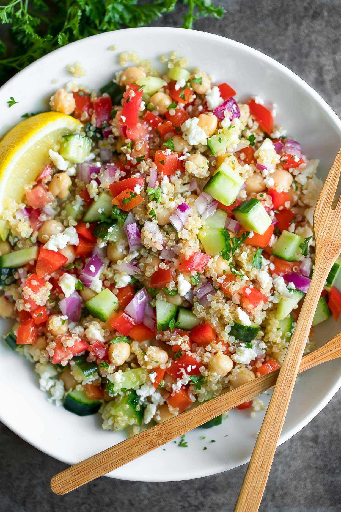

Quinoa Salad

This is some delicious tasty goodness and I love it.
- 1 cup Quinoa
- 1 block Feta
- 1 Bell Pepper
- 1/2 Red Onion
- 1 whole Cucumber
- 1 Can Chickpeas
- 1 Lemon
- 2 Tbsp Olive Oil
- Add quinoa to 1 1/2 cup water in pot and bring to boil
- Let quinoa simmer at low heat for 15min
- When finished let quinoa cool
- Set lemon and Olive oil to side
- Chop remaining ingredients to preferred size
- Add everything to salad bowl
- Squeeze one whole lemon to quinoa
- Add Olive oil
- Mix thoroughly
- ENJOY!